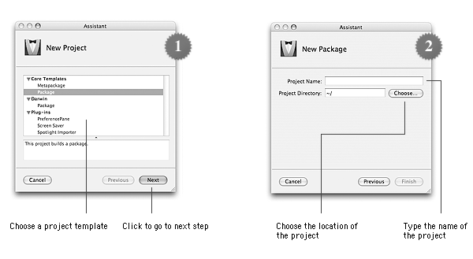
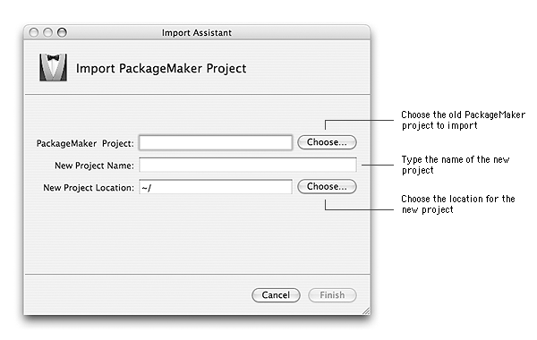

When you create an installer for Mac OS X, the first step is to create a project. This project will be used to define files to be installed and where to install them.
There are two kinds of projects which are similar to the components Installer supports:
An Iceberg project can be created two ways: using a project template or importing a PackageMaker project.
Creating a project from a templateA number of project templates are available by default with Iceberg so that you can select the more appropriate as the basis of your project.
You can also add your own project templates using the instructions detailed in the Project templates document.

To create a package projet using a project template:
| 1 | Choose File > New Project…. | ||
| 2 | Select Package in the Core Templates category.
| ||
| 3 | Click Next. | ||
| 4 | Type the name of the project in the Project Name text field. | ||
| 5 | Click Choose…. | ||
| 6 | Select the folder where the project shall be created and click Choose. | ||
| 7 | Click Finish. |
To create a metapackage projet using a project template:
| 1 | Choose File > New Project…. |
| 2 | Select Metapackage in the Core Templates category. |
| 3 | Click Next. |
| 4 | Type the name of the project in the Project Name text field. |
| 5 | Click Choose…. |
| 6 | Select the folder where the project shall be created and click Choose. |
| 7 | Click Finish. |
To move a project from PackageMaker to Iceberg, you just have to import the project.
If you're importing a package project, the files hierarchy will be built using the root folder you specified with PackageMaker.
If you're importing a metapackage project, only the metapackage will be imported in the new project. You will need to import its components manually. To do so, please consult the Managing Components document.
Iceberg can import all the PackageMaker project formats but the Distribution Script ones.

To import a PackageMaker project:
| 1 | Choose File > Import Project…. |
| 2 | Click the Choose… button on the right of the PackageMaker Project text field. |
| 3 | Select the project to import and click Choose. |
| 4 | Type the name of the project in the New Project Name text field. |
| 5 | Click the Choose… button on the right of the New Project Location text field. |
| 6 | Select the folder where the project shall be created and click Choose. |
| 7 | Click Finish. |